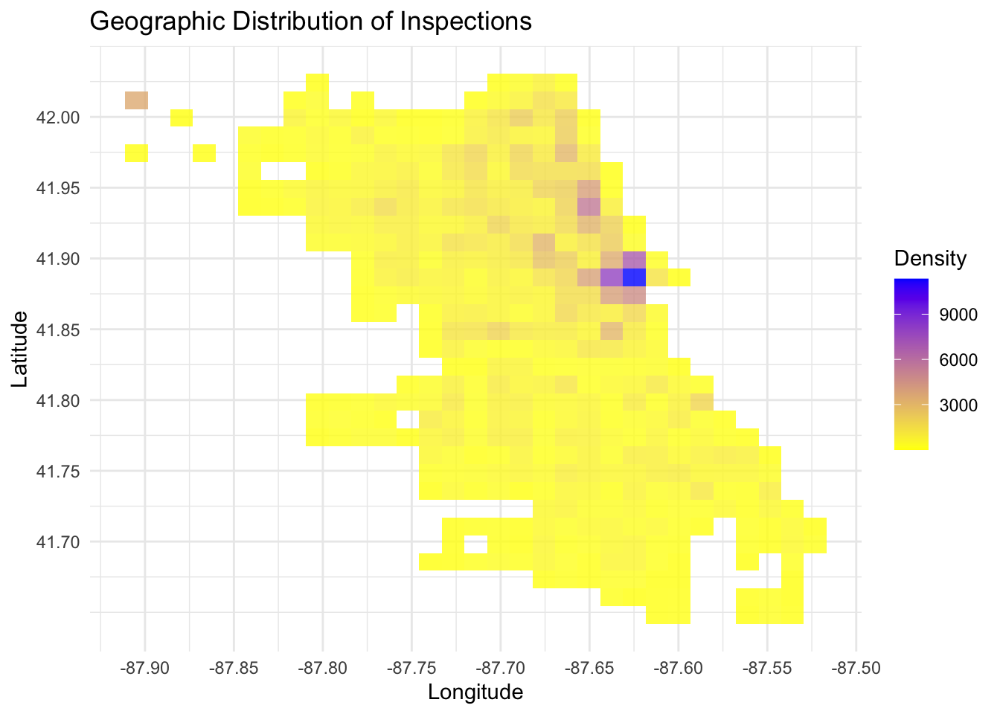
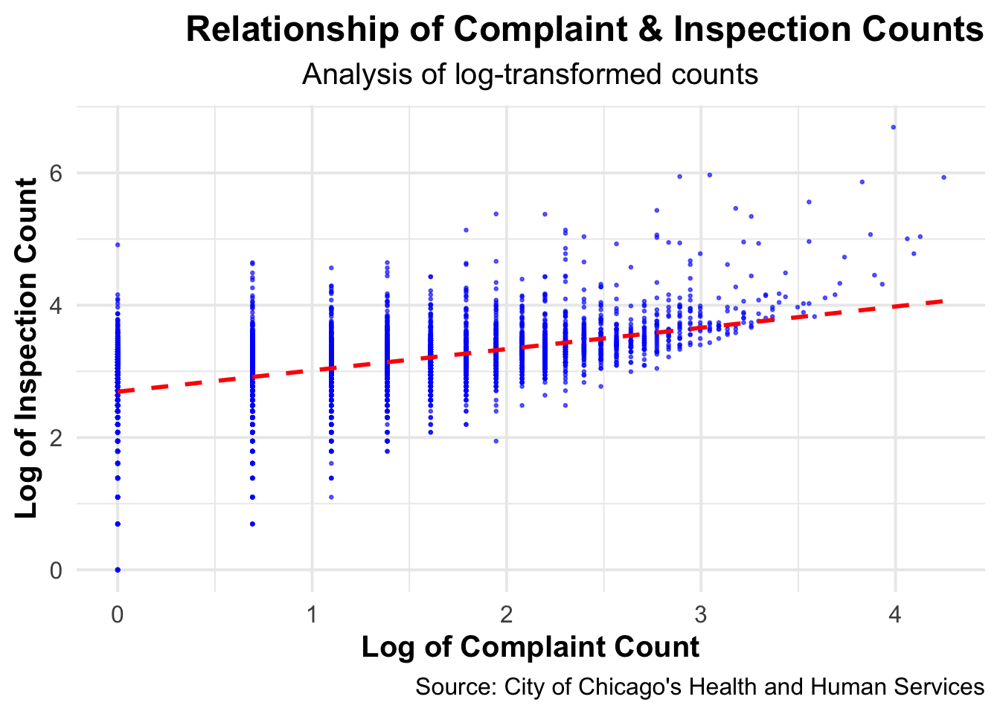
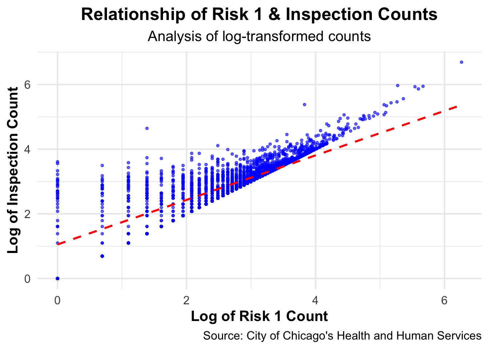
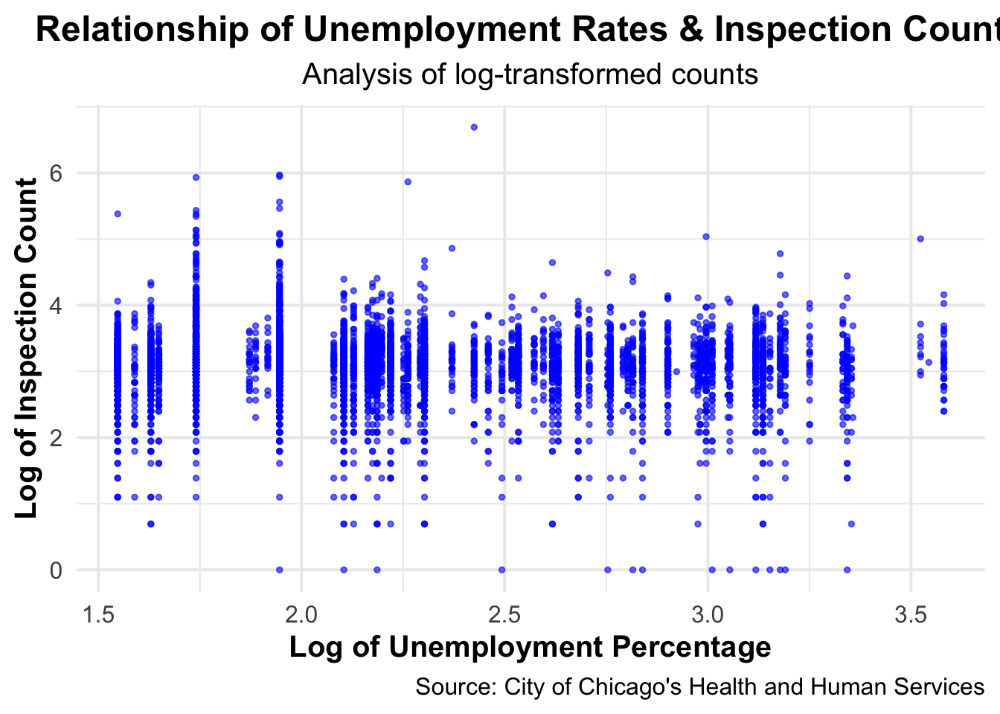
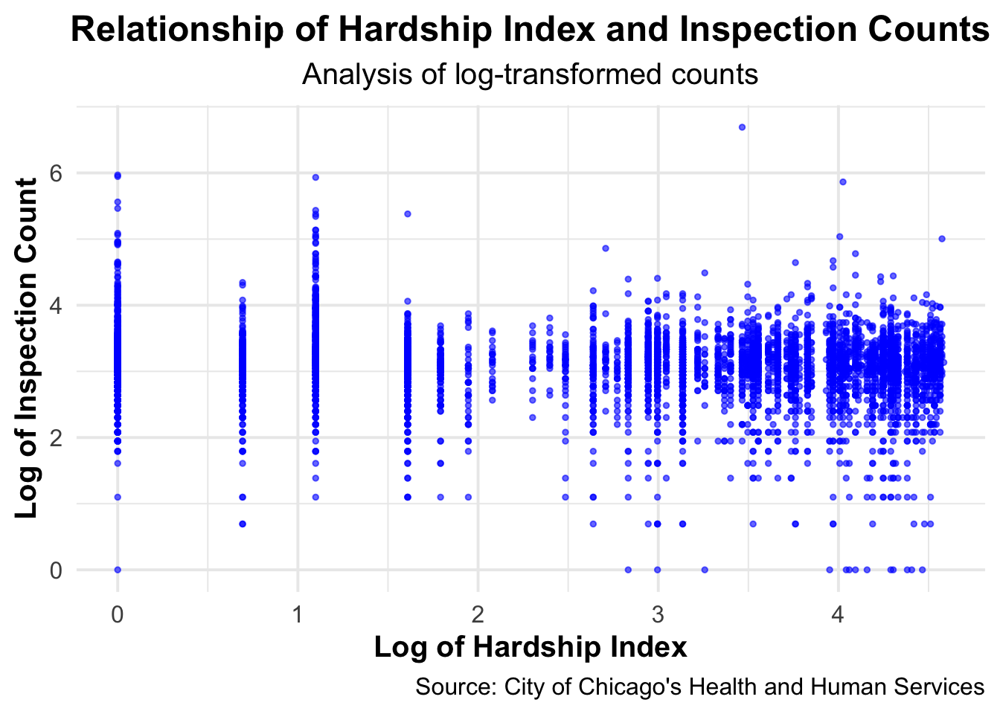

#|echo: false
# loading libraries and data
library(ggplot2)
library(caTools)
library(readr)
library(downloader)
library(caTools)
library(FNN)
library(readxl)
cfs_clean <- readRDS("/Users/michelle/Downloads/DSRP/DSRP-2024-Shaunette/MichelleProject/cfs_clean.rds")
merged_data_clean <- readRDS("/Users/michelle/Downloads/DSRP/DSRP-2024-Shaunette/MichelleProject/merged_data_clean.rds")Economic Activity and Historical Risk Factors: Key Factors of Food Safety Oversight in Chicago
Abstract
Problem: This study investigates how economic activity and historical risk factors influence food safety inspection frequencies in Chicago. The research aimed to determine whether factors such as economic conditions and past inspection history significantly impact the frequency of inspections, hypothesizing that these variables would explain a substantial portion of the variance in inspection counts. Approach: Using a dataset with log-transformed variables including risk counts, complaint counts, economic indicators (hardship index, unemployment percentage), and inspection frequencies, I applied linear regression models to analyze the relationships. Model 1 used risk and complaint data, while Model 2 included additional economic predictors. The analysis involved comparing model performance using Mean Squared Error (MSE), R-squared values, and ANOVA tests. Results: Model 2, which incorporated economic indicators, marginally outperformed Model 1 with a slight increase in R-squared (0.7072 vs. 0.7061) and a lower MSE. Although the ANOVA test indicated a statistically significant improvement with additional predictors, the practical impact on model fit was minimal. This suggests that other factors not included in the models might also play a significant role. Conclusion: The findings highlight the importance of incorporating economic conditions and historical risk data in food safety inspection strategies. While the models confirmed the role of these factors, the limited improvement in model fit suggests the need for further research to address missing data and explore additional variables. Effective food safety management in urban environments like Chicago could benefit from a more comprehensive approach that includes these and potentially other relevant factors.
Background
Food safety issues have grown in recent years with the count of inspections and failing results rising. As a food-lover, I recognize the importance of giving the public enough information for them to keep themselves safe. This investigation sheds light on the relationship between economic conditions, historical inspection data, and the frequency of food safety inspections. Understanding these dynamics can help policymakers and health departments allocate resources more effectively to ensure food safety. Previous studies have shown that economic disparities can affect public health outcomes, making this investigation into food safety oversight timely and relevant (Smith, 2021). By analyzing the provided datasets, this research aims to provide insights into how economic activity and past inspection results influence food safety practices in Chicago. Investigating the question, “To what extent is food safety oversight in Chicago influenced by economic activity and past inspection history?” is crucial to help us understand how different factors affect public health and safety. I hypothesized that greater economic activity, represented by a lower unemployment rate and lower hardship index of an area may lead to more business activity. I suspected more frequent inspections in a high activity establishment may be due to higher number of complaints from customers. Coupled with poorer inspection history, represented by a greater complaint count and greater high risk classification count calculated from the results of past inspections, these factors may lead to greater food safety oversight, represented by more inspections. There are two datasets I used for this project: one with data about Chicago Food Inspections provided by the City of Chicago’s Health and Human Services and another dataset focusing on economic indicators such as unemployment rates and hardship indices.
References: Smith, J. (2021). Economic Disparities and Public Health Outcomes. Journal of Public Health, 45(3), 123-134.
Results
Figure 1: Geographic Distribution of Inspections in Chicago This plot illustrates the geographic distribution of food safety inspections across Chicago, visualized using a density heatmap. The density of inspections is shown with colors ranging from yellow (low density) to blue (high density), indicating the number of inspections conducted in various regions, measured by longitude and latitude. The heatmap reveals that the highest concentration of inspections occurs at about 41.887, -87.625, as indicated by the blue and purple areas. This spatial analysis of Chicago provides a visual context in the variance of inspection counts over different Chicago regions.
#|echo: false
ggplot(cfs_clean, aes(x = longitude, y = latitude)) +
geom_bin2d(bins = 30, alpha = 0.8) +
scale_fill_gradient(low = "yellow", high = "blue") +
labs(title = "Geographic Distribution of Inspections",
x = "Longitude",
y = "Latitude",
fill = "Density") +
# changing axes to count by 0.05
scale_x_continuous(breaks = seq(-87.9, -87.5, by = 0.05),
labels = function(x) sprintf("%.2f", x)) +
scale_y_continuous(breaks = seq(41.7, 42.0, by = 0.05),
labels = function(y) sprintf("%.2f", y)) +
theme_minimal()Warning: Removed 956 rows containing non-finite outside the scale range
(`stat_bin2d()`).
Figure 2a: Relationship Between Complaint and Inspection Count This plot illustrates the relationship between the log-transformed counts of complaints and the log-transformed inspection counts. The blue points represent individual data points, while the red dashed line indicates the clear linear trend. There is a positive correlation of 0.498662 between these variables. This suggests that a establishments with higher complaint counts may tend to undergo more inspections.
#|echo: false
ggplot(merged_data_clean, aes(x = log_complaint_count, y = log_inspection_count)) +
geom_point(alpha = 0.6, size = 0.5, color = "blue") +
geom_smooth(method = "lm", se = FALSE, color = "red", linetype = "dashed") +
labs(title = "Relationship of Complaint and Inspection Counts",
subtitle = "Analysis of log-transformed counts",
x = "Log of Complaint Count",
y = "Log of Inspection Count",
caption = "Source: City of Chicago's Health and Human Services") +
theme_minimal(base_size = 15) +
theme(
plot.title = element_text(hjust = 1, face = "bold"),
plot.subtitle = element_text(hjust = 0.5),
plot.caption = element_text(hjust = 1),
axis.title.x = element_text(face = "bold"),
axis.title.y = element_text(face = "bold")
)`geom_smooth()` using formula = 'y ~ x'
Figure 2b: Relationship Between Hardship Index and Inspection Counts This plot illustrates the relationship between the log-transformed counts of Risk 1 results (high risk classification) and the log-transformed inspection counts. The blue points represent individual data points, while the red dashed line indicates the clear linear trend. There is a strong positive correlation of 0.8231694 between these variables. This suggests that establishments with higher Risk 1 counts tend to undergo more inspections.
#|echo: false
ggplot(merged_data_clean, aes(x = log_risk_1_count, y = log_inspection_count)) +
geom_point(alpha = 0.6, size = 1, color = "blue") +
geom_smooth(method = "lm", se = FALSE, color = "red", linetype = "dashed") +
labs(title = "Relationship of Risk 1 and Inspection Counts",
subtitle = "Analysis of log-transformed counts",
x = "Log of Risk 1 Count",
y = "Log of Inspection Count",
caption = "Source: City of Chicago's Health and Human Services") +
theme_minimal(base_size = 15) +
theme(
plot.title = element_text(hjust = 0.5, face = "bold"),
plot.subtitle = element_text(hjust = 0.5),
plot.caption = element_text(hjust = 1),
axis.title.x = element_text(face = "bold"),
axis.title.y = element_text(face = "bold"),
)`geom_smooth()` using formula = 'y ~ x'
Figure 2c: Relationship Between Hardship Index and Inspection Counts This plot shows the relationship between the log-transformed percentages of unemployment among individuals aged 16 and older and the log-transformed inspection counts. The blue points depict individual data points. With a weak negative correlation of -0.06222899, there is no clear linear trend, suggesting that other factors might play a more significant role in determining the frequency of inspections. Unemployment percentage alone does not provide a strong explanatory power for the variance in inspection counts.
#|echo: false
ggplot(merged_data_clean, aes(x = log_percent_aged_16_unemployed, y = log_inspection_count)) +
geom_point(alpha = 0.6, size = 1, color = "blue") +
labs(title = "Relationship of Unemployment Percentage and Inspection Counts",
subtitle = "Analysis of log-transformed counts",
x = "Log of Unemployment Percentage",
y = "Log of Inspection Count",
caption = "Source: City of Chicago's Health and Human Services") +
theme_minimal(base_size = 15) +
theme(
plot.title = element_text(hjust = 0.5, face = "bold"),
plot.subtitle = element_text(hjust = 0.5),
plot.caption = element_text(hjust = 1),
axis.title.x = element_text(face = "bold"),
axis.title.y = element_text(face = "bold")
)
Figure 2d: Relationship Between Hardship Index and Inspection Counts This plot depicts the relationship between the log-transformed hardship index and the log-transformed inspection counts. The blue points represent individual data points. Similar to the unemployment percentage, with a weak negative correlation of -0.08902566, there is no clear linear trend indicating that the hardship index may not provide strong explanatory power for the variance in inspection counts, either.
#|echo: false
ggplot(merged_data_clean, aes(x = log_hardship_index, y = log_inspection_count)) +
geom_point(alpha = 0.6, size = 1, color = "blue") +
labs(title = "Relationship of Hardship Index and Inspection Counts",
subtitle = "Analysis of log-transformed counts",
x = "Log of Hardship Index",
y = "Log of Inspection Count",
caption = "Source: City of Chicago's Health and Human Services") +
theme_minimal(base_size = 15) +
theme(
plot.title = element_text(hjust = 0.5, face = "bold"),
plot.subtitle = element_text(hjust = 0.5),
plot.caption = element_text(hjust = 1),
axis.title.x = element_text(face = "bold"),
axis.title.y = element_text(face = "bold")
)
Figure 3a: Creating Linear Models This analysis compared two linear regression models to predict log-transformed inspection counts using different sets of predictors. In Linear Model 1, which included log-transformed counts of Risk 1 violations and complaints, the mean squared error (MSE) was 0.0817, indicating a reasonably accurate prediction with 70.61% of the variance explained (R-squared = 0.7061). Model 2 expanded on Model 1 by adding log-transformed hardship index and unemployment percentage as additional predictors. Model 2 demonstrated a slightly improved performance with an MSE of 0.0816 and a higher R-squared of 0.7072, indicating that 70.72% of the variance in log inspection counts was explained.
Code
# Split the data
split <- sample.split(merged_data_clean$log_inspection_count, SplitRatio = 0.8)
train_data <- subset(merged_data_clean, split == TRUE)
test_data <- subset(merged_data_clean, split == FALSE)
# Linear Model #1 - uses 2 predicting variables
lr_model <- lm(log_inspection_count ~ log_risk_1_count + log_complaint_count, data = train_data)
# Linear Model #2 - uses 4 predicting variables
extended_model <- lm(log_inspection_count ~ log_hardship_index + log_percent_aged_16_unemployed + log_risk_1_count + log_complaint_count, data = train_data)
# Predicting
pred <- predict(lr_model, newdata = test_data)
pred_2 <- predict(extended_model, newdata = test_data)
# Linear Model 1
cat("\nLinear Model 1:\n")
Linear Model 1:Code
cat("Mean Squared Error (MSE) = ", mean((test_data$log_inspection_count - pred)^2), "\n")Mean Squared Error (MSE) = 0.0842447 Code
cat("R-squared = ", summary(lr_model)$r.squared, "\n")R-squared = 0.7081296 Code
# Linear Model 2
cat("\nLinear Model 2:\n")
Linear Model 2:Code
cat("Mean Squared Error (MSE) = ", mean((test_data$log_inspection_count - pred_2)^2), "\n")Mean Squared Error (MSE) = 0.08423161 Code
cat("R-squared = ", summary(extended_model)$r.squared, "\n")R-squared = 0.7093211 Figure 3b: Comparing Linear Models The ANOVA test between the two models yielded a significant result (P-value = 0.000409 < α = 0.05), suggesting that the additional predictors of log of percent of unemployment and log of hardship index in Model 2 significantly improved the model fit compared to Model 1.
Code
anova_result <- anova(lr_model, extended_model)
cat("\nANOVA Test Results:\n")
ANOVA Test Results:Code
cat("P-value: ", anova_result$`Pr(>F)`, "\n")P-value: NA 0.0002293838 Discussion
The analysis of these linear regression models provides valuable insights into the factors influencing food inspection frequencies and their predictive accuracy. Model 2, incorporating additional predictors such as hardship index and unemployment percentage alongside risk 1 violations and complaints, marginally outperformed Model 1 in terms of explaining variance in log-transformed inspection counts. This suggests that economic conditions and specific risk factors significantly impact inspection frequencies, highlighting the complex interplay between regulatory oversight and socio-economic dynamics in urban settings like Chicago. One important note is that while the addition of log_hardship_index and log_percent_aged_16_unemployed to the model results in a statistically significant improvement (as shown by the ANOVA test), the practical impact on the overall fit of the model (R²) is minimal. This could mean that other factors not included in the model might have a more substantial influence on log_inspection_count, or that the relationships between the current variables are complex and not fully captured by the linear model. The findings underscore the practical importance of considering both economic indicators and historical risk data when allocating resources for food safety inspections. Understanding these relationships can help local health departments prioritize inspections more effectively, potentially enhancing public health outcomes by targeting high-risk areas more efficiently. Interestingly, while Model 2 yielded slightly better predictive results than anticipated, the overall findings generally align with the initial hypothesis that economic activity and past inspection history influence inspection frequency. This supports the notion that proactive monitoring and regulatory interventions are crucial in maintaining food safety standards, especially in areas with higher economic activity and perceived risk. Moving forward, it would be valuable to address the limitations inherent in the dataset, such as the significant number of missing values across key variables: 1888 missing values for quarter, 4 for inspection count, 9829 for complaint count, 2843 for percent aged 16 unemployed, 2844 for hardship index, 7094 for risk 1 count, 12874 for risk 2 count, and 11933 for risk 3 count. These missing values necessitated their omission from the analysis, potentially introducing biases and limiting the generalizability of findings. Future research could explore strategies to impute missing data more effectively or consider alternative approaches to modeling that can accommodate missingness without compromising analytical robustness. Additionally, investigating how other socio-demographic factors or temporal trends influence inspection outcomes could provide a more comprehensive understanding of food safety dynamics in urban environments.
Code and Data Availability
bla bla
Acknowledgements
bla bla